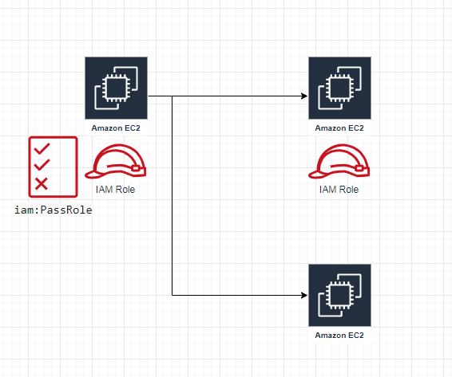

測試部門的同事遇到一個問題: 在AWS EC2 instance(A)上執行ansible啟動其他新的instance(B)時會失敗, 同事告知已經試過在instace A上使用AWS CLI執行, 且結果是正常的
1 | aws ec2 run-instances \ |
之後從log內發現可能是因為iam:PassRole這個權限的關係, 另一位開發同事協助檢查instace A上所掛載的IAM Role相關權限, 發現只有和ec2:RunInstance有關的權限, 補上iam相關的權限後, ansible執行結果就是正常的
小結
iam:PassRole從字面上有點難以理解, 從執行效果來看類似
賦予將某某Role掛載到某某Resource上的權限
回頭來看, 使用AWS CLI執行結果正常的原因是所啟動的EC2 instance並沒有掛載Role, 如圖下方

因此, 若要啟動一個有掛載IAM Role的EC2 instance, 可以參考官方文件的範例
1 | { |